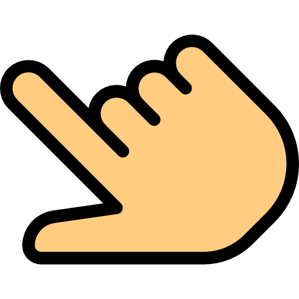
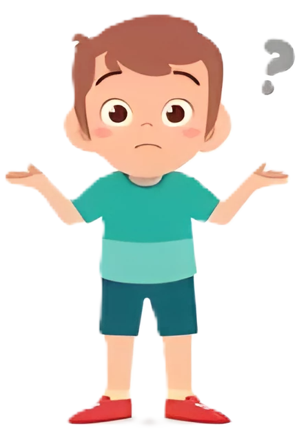

Transformasi Geometri
Pengertian Transformasi
Sub Materi
Pengertian Transformasi Geometri
Objek Sebelum dan Setelah Bertransformasi
Uji Pemahaman Transformasi
Your browser does not support the audio element.
Your browser does not support the audio element.
Your browser does not support the audio element.
Kamu harus menyelesaikan halaman ini dulu!
Pengertian Transformasi
Sub Materi
Pengertian Transformasi Geometri
Objek Sebelum dan Setelah Bertransformasi
Uji Pemahaman Transformasi
Objek Bertransformasi
Coba kamu ubah posisi titik A kemana saja asal tetap ada di dalam kotak.

A
Coba amati apa yang berbeda dari titik A sebelum dan sesudah ditransformasi.
Ayo amati lagi persegi ABCD dibawah yang diubah posisinya
A
B
C
D
A'
B'
C'
D'
Sadarkah kamu bahwa nama atau label titik A menjadi A' dan persegi ABCD menjadi A'B'C'D' setelah ditransformasi.

Jadi, cara membedakan objek sebelum dan setelah bertransformasi adalah dengan memperhatikan....
A
Posisinya
B
Labelnya
A
Ukurannnya
Labelnya
Kesimpulan
Label objek setelah bertransformasi akan memiliki tanda aksen (')